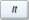
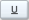

This dialog can be opened by several commands such as Title command or when you double click on a text object in your plot. It allows to add/customize the text objects.
The Color, Font and Alignment commands allow the modification of the general settings of the text label.
The text item can be modified in the text window. Several improvements can be added to the text:
<sub>text</sub> will draw the text as subscripts. You can insert this sequence by clicking on the .
<sup>text</sup> will draw the text as superscripts. You can insert this sequence by clicking on the .
By clicking on the , you can open a new dialog which allows to select greek characters:
By clicking on the , you can open a new dialog which allows to select various mathematical symbols:
<b>text</b> will draw the text with bold characters. You can insert this sequence by clicking on the .
<i>text</i> will draw the text with italic characters. You can insert this sequence by clicking on the .
<u>text</u> will draw the text with underlined characters. You can insert this sequence by clicking on the .